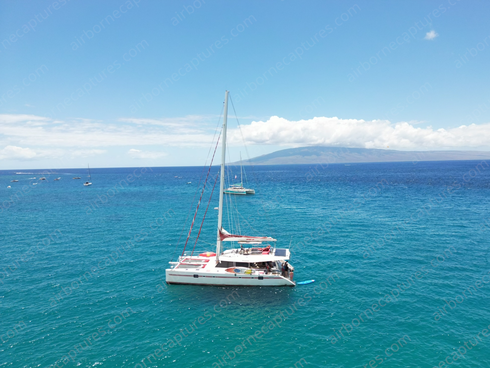
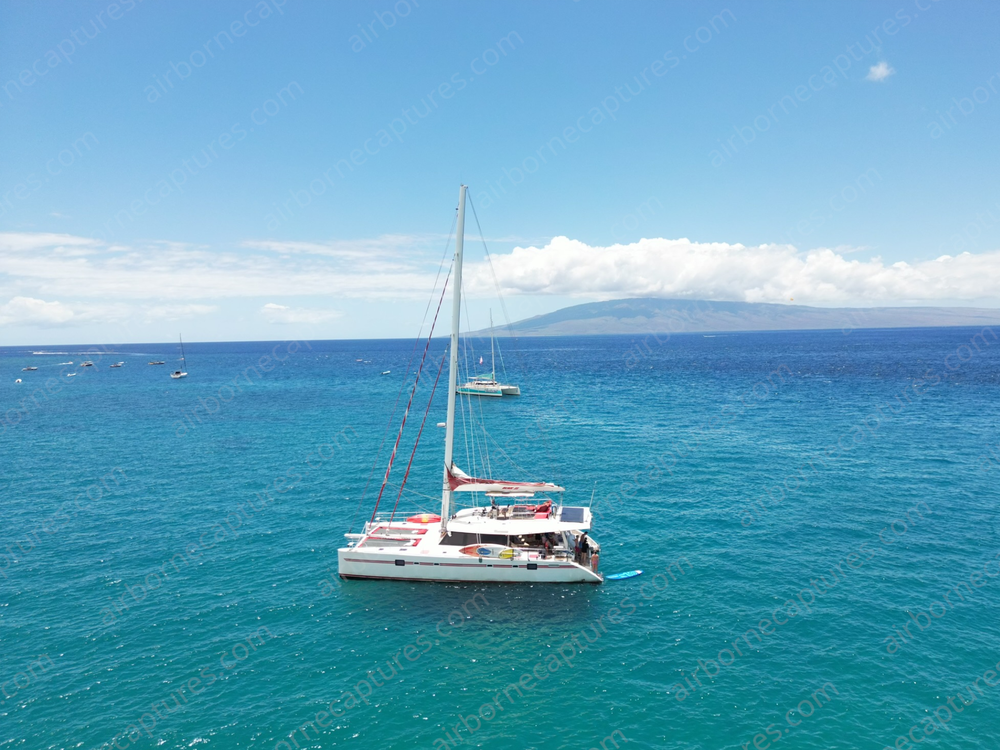

Your World From Above


 

About Me and My Services
My name is Ryan Stein, and I have had an interest in drones ever since I first got one when I was 11 years old. From that day on, I have devoloped my skills in drone photgraphy and videography. I currently work with L & B Travel, creating drone travel videos of all kinds.
- I have over 50 hours of professional drone flight experience and would like to expand my horizons to all drone photography needs.
- I provide drone photography services for all purposes to all those within a 40-mile radius of the Encino area of Los Angeles.
- I will make sure I capture the shots you need and add in some of my own extra shots so you won’t miss out on a thing.